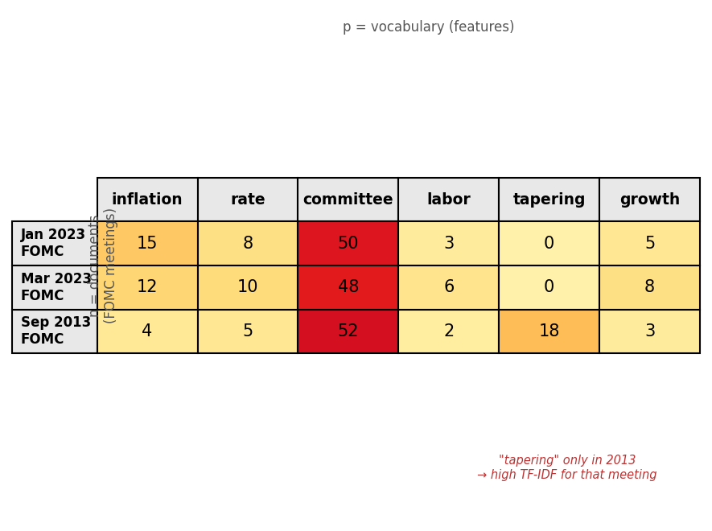
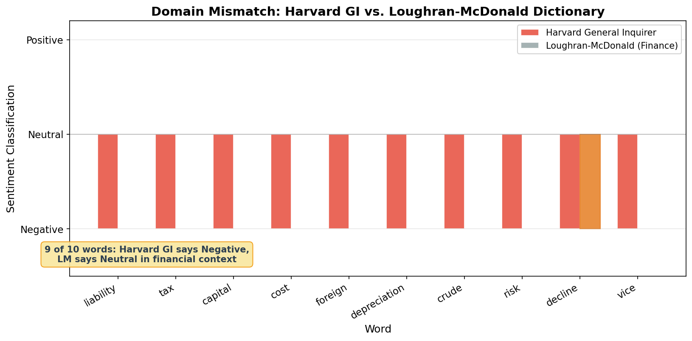
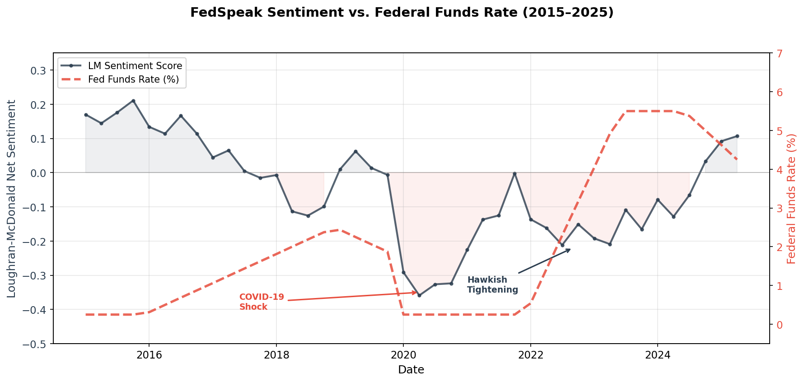
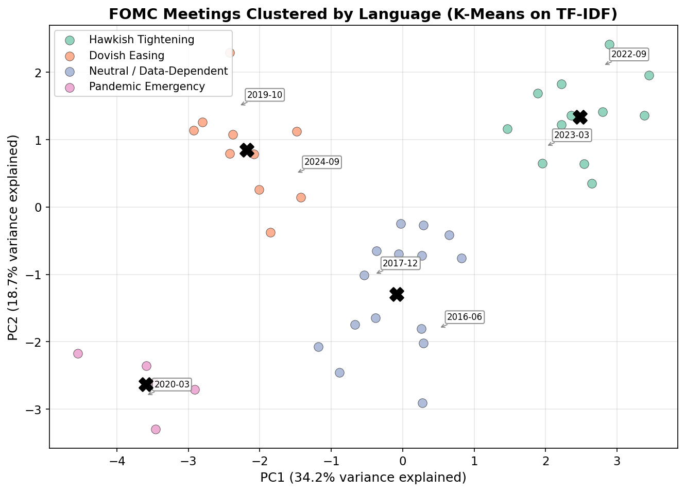
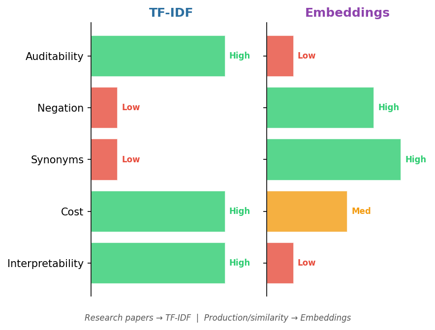

ECON 5200 • Causal ML & Applied Analytics • Chapter 23
NLP for Economists:
Text as Data
Dr. Richeng Piao
Department of Economics
Northeastern University
Learning Objectives
23.1
Understand the bag-of-words representation, tokenization, and why TF-IDF improves on raw word counts for extracting economic signals from text
23.2
Apply a complete text preprocessing pipeline — tokenization, stop word removal, and TF-IDF vectorization — using scikit-learn in Python
23.3
Analyze FOMC meeting minutes using the Loughran-McDonald financial sentiment lexicon and evaluate the correlation with subsequent rate decisions
23.4
Evaluate the trade-offs between dictionary-based sentiment and embedding-based similarity for economic text analysis
Retrieval Practice
From Chapter 22
In K-Means, what is the centroid? What summary statistic does it inherit?
The arithmetic mean of all observations in the cluster. Inherits 1/n breakdown point.
From Chapter 6
What is feature engineering? What are we doing to raw inputs?
Transforming raw inputs into structured numerical features that an algorithm can process.
From Chapter 15
What happens to model variance when features increase, observations stay fixed?
Variance increases — the curse of dimensionality. Today: 10,000 features from 260 docs.
Today: feature engineering on text (Ch 6), same K-Means algorithm (Ch 22), same curse of dimensionality (Ch 15).
The Edge Is in Words, Not Numbers
Man Group ($213.9B AUM) partnered with Anthropic in Feb 2026 to deploy LLMs across systematic trading. Their thesis: traditional numerical signals are commoditized. The edge now lives in language.
JPMorgan Chase deployed 450+ AI use cases by 2025, $18B in tech spending, ~$1.3B on AI — much of it processing unstructured text.
How do you convert a 10,000-word Fed document into numbers?
That is what we build today — from scratch.
Section 1
From Numbers to Words
The Document-Term Matrix
The bag-of-words model treats each document as an unordered collection of words. Grammar and word order are ignored.
This produces a document-term matrix:
\[\mathbf{X} \in \mathbb{R}^{n \times p}\]
\(n\) = documents, \(p\) = vocabulary size. Each entry \(x_{ij}\) = frequency of word \(j\) in document \(i\).
Concept Extension: Last class you had a country x indicator matrix. Today you have a document x word matrix. Same math, different features.

Poll: Biggest Problem with Raw Counts?
You have 260 FOMC documents and a vocabulary of 10,000 words. You build a DTM from raw word counts. What is the biggest problem?
Answer: Common Words Dominate
B is correct. Words like "the," "committee," and "economic" dominate raw counts but carry zero discriminating power. This is why we need TF-IDF — a weighting scheme that down-weights exactly these uninformative words.
Section 2
Weighting Words by Distinctiveness
TF-IDF: Frequency × Rarity
\[\text{TF-IDF}(t, d, D) = \text{TF}(t, d) \times \log\frac{|D|}{df(t)}\]
TF(t, d)
Frequency of term \(t\) in document \(d\)
How often in this document?
|D|
Total documents in corpus
260 FOMC meetings
df(t)
Documents containing term \(t\)
How common across corpus?
Interpretation: TF-IDF is high when a word appears frequently in this document but rarely across the corpus. It is low when a word is ubiquitous.
Worked Example: January 2023 FOMC
"inflation"
TF = 15 (appears 15 times)
df = 40 (in 40 of 260 meetings)
IDF = log(260 / 40) = log(6.5) ≈ 1.87
TF-IDF = 15 × 1.87 = 28.1
High score — distinctive word
"committee"
TF = 50 (appears 50 times)
df = 260 (in ALL 260 meetings)
IDF = log(260 / 260) = log(1) = 0
TF-IDF = 50 × 0 = 0
Zero score — no discriminating power
A word that appears 50 times gets a score of zero. That is the power of the IDF term.
TF-IDF Across FOMC Documents

High-weight cells (dark) = words that are both frequent in that document and rare across the corpus
Discussion: What About "Tapering"?
If "committee" has IDF ≈ 0, what about "tapering" — which appeared in only 15 of 260 meetings, concentrated in 2013–2014?
What does its IDF score look like, and what does that tell an economist?
The Math
IDF = log(260/15) ≈ 2.85
High IDF — rare and distinctive
The Economics
Those meetings = "taper tantrum" period
TF-IDF identifies regime-specific vocabulary automatically
90 sec think → 90 sec pair → 1 min share
Poll: Is "Liability" Negative in a 10-K?
The Harvard General Inquirer classifies the word "liability" as negative. In a corporate 10-K filing, is that classification correct?
Answer: Neutral Accounting Term
B is correct. In a 10-K filing, "liability" is a standard balance sheet category that every company reports. It is not bad news — it is an accounting requirement. General-purpose dictionaries systematically misclassify financial language.
Section 3
Domain-Specific Sentiment
The 73.8% Problem
73.8%
of Harvard GI "negative" words are NOT negative in financial text
Loughran & McDonald (2011) tested on 50,115 firm-year 10-K filings. General-purpose sentiment is useless for economic text.

LM Sentiment Score
The Loughran-McDonald lexicon: 6 categories
\[\text{Sent}(d) = \frac{N_{\text{pos}} - N_{\text{neg}}}{N_{\text{pos}} + N_{\text{neg}} + \varepsilon}\]
Ranges from −1 (hawkish) to +1 (dovish)
Bloomberg FedSpeak Pipeline
Bloomberg scores every FOMC statement in real time, generating a Hawkishness Index for the Terminal. During 2022–2023 tightening:
14 of 16 rate decisions predicted correctly
LM lexicon + fine-tuned FinBERT embeddings
Decision Scenario: Which Tool?
You are a research analyst at a central bank. Build an automated system to score FOMC minutes for hawkishness/dovishness.
A: Harvard GI
General-purpose, well-known, easy to implement
73.8% misclassification rate
B: Loughran-McDonald
Domain-specific, financially calibrated, auditable
Best for regulatory audience
C: Fine-tuned FinBERT
Most accurate, but black-box
Hard to explain to policymakers
Twist: Now imagine the same system, but for real-time analysis of Twitter/X posts about the Fed. Does your answer change? (Hint: tweets use informal language the LM dictionary was not built for.)
Poll: First Step in FedSpeak Pipeline?
You have raw FOMC meeting text. What is the correct first step?
Answer: Tokenize First
D is correct. Pipeline order: Tokenize → TF-IDF → LM Sentiment → Cluster/Analyze. You cannot compute word frequencies until you have split the text into words. In the lab, you will start with a broken pipeline and diagnose which step failed.
Section 4
The Complete FedSpeak Pipeline
The FedSpeak Pipeline
1
Load FOMC minutes from HuggingFace (260+ docs, 1994–present)
2
Preprocess → TF-IDF — tokenize, remove stop words, compute weights (260 × 1,000)
3
Score with LM sentiment — one scalar per meeting
4
Correlate with rate decisions — does hawkish language precede rate hikes?
5
Cluster by language — K-Means on TF-IDF (Ch 22 callback), PCA → 2D


Top TF-IDF Words per Cluster
K-Means with \(k=4\) on TF-IDF vectors reveals distinct linguistic regimes:
Cluster 0 — Hawkish
"inflation pressures," "tightening," "price stability," "upside risks"
Cluster 1 — Dovish
"accommodation," "recovery," "labor market," "downside risks"
Cluster 2 — Crisis
"liquidity," "financial conditions," "emergency," "credit markets"
Cluster 3 — Transition
"gradual," "monitoring," "data dependent," "balanced risks"
The text tells you the monetary policy regime — without any labeled training data.
Section 5
Beyond Dictionaries [5200]
Sentence Embeddings [5200]
TF-IDF ignores meaning. The phrases "the economy is weakening" and "growth is slowing" convey the same message but share zero words. Their TF-IDF cosine similarity = 0.
Sentence embeddings map text into a dense vector (384 dimensions) that captures semantic meaning.
\[\text{sim}(\mathbf{u}, \mathbf{v}) = \frac{\mathbf{u} \cdot \mathbf{v}}{\|\mathbf{u}\| \|\mathbf{v}\|}\]
"The economy is weakening" ↔ "Growth is slowing"
Cosine sim ≈ 0.75 (high)
TF-IDF score: 0.0
"The economy is weakening" ↔ "The labor market remains robust"
Cosine sim ≈ 0.25 (low)
TF-IDF score: 0.0
TF-IDF gives both pairs the same score. Embeddings distinguish them.
TF-IDF vs. Embeddings [5200]
| Criterion | TF-IDF | Sentence Embeddings |
|---|---|---|
| Interpretability | High — inspect word weights | Low — 384 opaque dimensions |
| Computational cost | Minimal — any laptop | Moderate — benefits from GPU |
| Captures synonyms | No | Yes |
| Captures negation | No — "not increasing" ≈ "increasing" | Partially — better but imperfect |
| Regulatory auditability | High — explainable to compliance | Low — black box for regulators |
| Best for | Dictionary sentiment, keyword analysis, baselines | Semantic search, similarity, clustering by meaning |

Discussion: Which Method Wins?
When would you choose TF-IDF over embeddings for a paper submitted to a top economics journal? When would a quantitative hedge fund choose the opposite?
Research Paper → TF-IDF
Referees expect transparency. LM dictionary is the accepted standard. Embeddings make reviewers uncomfortable.
Hedge Fund → Embeddings
They care about predictive accuracy, not interpretability. Semantic similarity captures nuance word lists miss.
Meta-point: Method selection depends on the audience, not just the data. Same data, same question, different methods — because institutional context changes the interpretability-accuracy tradeoff.
Open discussion — call on 2–3 students
Key Takeaways
1
Text is a feature engineering problem. The DTM converts documents into the same \(\mathbf{X}\) matrix you have used since Chapter 4 — words as features, documents as observations.
2
TF-IDF weights words by distinctiveness. A word frequent in one document but rare across the corpus gets a high score. Ubiquitous words are automatically down-weighted.
3
Domain-specific lexicons are essential. The Harvard GI misclassifies ~73.8% of "negative" financial words. Always use Loughran-McDonald for economic text.
4
The FedSpeak pipeline works. Tokenize → TF-IDF → LM sentiment → cluster. Same K-Means from Ch 22 discovers linguistic regimes without labels.
5
Embeddings capture meaning beyond vocabulary. They recognize synonyms and semantic similarity — but sacrifice interpretability for power.
Exit Ticket
On a note card or your device:
1. Name one thing TF-IDF captures well about a document.
2. Name one thing TF-IDF misses that a human reader would understand.
2 minutes. Submit via form or paper.
2 min
Next class: Chapter 24 — Causal ML: Double Machine Learning
Text features become high-dimensional controls in treatment effect estimation